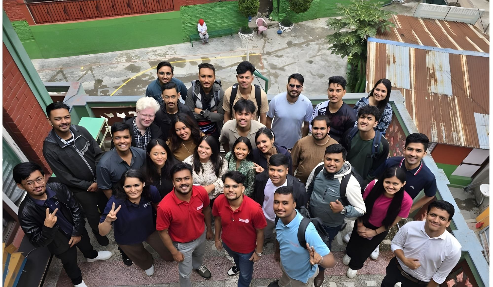
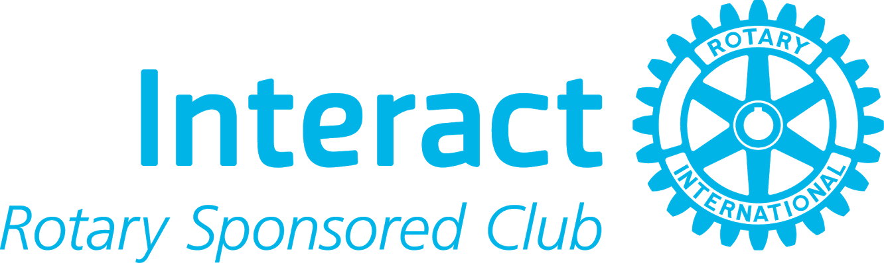

जोन ७ भनेको काठमाडौं घाँसमा अवस्थित रोटरेक्ट क्लबहरूको ज़ोनल आधारशिला हो। १८ देखि ३० वर्ष उमेरका युवा नेताहरूले आफ्ना क्लबहरू आयोजना गर्छन्, आफ्नै आयोजनाहरू सञ्चालन गर्छन् र समुदायका लागि उपस्थित रहन्छन्।

🩸 रक्तदान अभियान 🌳 रूख लगाउने काम 🤝 सामेलजुस्तीरोटरेक्ट भनेको स्थानीय रोटरी क्लबद्वारा आयोजना गरिएको युवा व्यक्तिहरूको क्लब हो। तर सदस्यहरूले आफ्नै योजना बनाउँछन्, आफ्नै बजेट बनाउँछन् र आफ्नै काम चलाउँछन्। कसैले रोटरेक्ट क्लबलाई तालिका हात पुर्याउँदैन।
यसैले २१ वर्षका एक विद्यार्थीले डिस्ट्रिच-मान्यता प्राप्त रक्तदान अभियान चलाउन सक्छ, र सधिलै नौकरी शुरु गरेका रोटरेक्टले क्लबको वार्षिक बजेट व्यवस्थापन गर्न सक्छ। यो एक नेतृत्व प्रशिक्षण क्षेत्र हो जुन वास्तविक सामुदायिक सेवामा आधारित छ।
अध्यक्षदेखि सचिवदेखि खातेदेखि, सबै अधिकारीहरू एक वर्षको कार्यकालका लागि क्लबद्वारा निर्वाचित रोटरेक्टर हुन्छन्।
परियोजनाहरूले नेतृत्व अभ्यासको रूपमा काम गर्छन्। बजेट व्यवस्थापन, सार्वजनिक भाषण, वार्ता, घटना सञ्चालन। सबै कुरा कदरेरै सिकिन्छ।
प्रत्येक क्लबले एउटा रोटरी डिस्ट्रिच र विश्वव्यापी जडान गरिएको क्लबहरूको जालसँग जोडिएको छ।
"दृष्टि स्पष्ट छ। मिशन हाम्रो छ। भविष्य सँगै छ।"
रोटरेक्ट डिस्ट्रिच ३२९२ · नेपाल र भुटान, आर्य २०२६-२७जोन ७ का नौवटा क्लबहरूमा, सेवा कामले धेरै प्रकारका कारणहरूमा फैलिएको छ। प्रत्येक घटनालाई दस्तावेज गरिने, रिपोर्ट गरिने र डिस्ट्रिच ३२९२ को आधिकारिक क्लब-उत्कृष्टता बरोमिटरमा गणना गरिने छ। यही हो जोन ७ को रिटर्याक्ट वर्षको भूमि।
नेपाल रेड क्रस सोसायटीसँग मिलेर रक्तदान अभियान, स्वास्थ्य शिविर, र स्कूलका बच्चाहरूका लागि स्वास्थ्य जागरूकता सत्रहरू।
साक्षरता अभियान, विद्यालयहरूमा कार्यशाला, र मेन्टरशिप कार्यक्रमहरू रोटरेक्टको मूलभूत शिक्षा र साक्षरता क्षेत्रमा।
रोटरी सँग मिलेर रूख लगाउने काम, टार्केश्वर नगरपालिकादेखि नदी र स्थानीय क्लबहरूको सफाइसम्म।
क्यायर टक, उद्यमिता बुटक्याम्प, र कौशल कार्यशाला। यो रोटरेक्टको चौथो सेवा मार्ग हो, र सबैभन्दा मूल्यवान्।
जुड़ी क्लबहरूका साझेदारी र विदेशका क्लबहरूसँगको संयुक्त अनलाइन सत्रहरू। अन्तर्राष्ट्रिय मार्गदर्शनले मित्रतामा आधारित छ।
स्थापना समारम्भ, क्लबहरूबीचको विश्राम भ्रमण, र सामुदायिक कारणका लागि क्यारिभल र कमेडी रात्रि जस्ता सार्वजनिक संग्रहहरू।
डीआरआर भ्रमण, क्लब सभा, र डिस्ट्रिच ३२९२ को मानकहरू पालन गर्ने गरीव्यवस्थापन काम।
प्रत्येक परियोजनालाई दस्तावेज गरी राख्ने र साझा गर्ने ताकि कामले कमेटाको बाहिरसम्म पुग्छ। सामाजिक सञ्जाल, फोटोग्राफी, कथाकथन।
इन्टर्याक्ट भनेको विद्यालयको आधारमा रोटरीको कार्यक्रम हो जसलाई १२ देखि १८ वर्ष उमेरका विद्यार्थीले लिन्छन्, र रोटरेक्ट क्लबहरू प्राकृतिक रूपमा मेन्टर गर्छन्। उनीहरूले समान परियोजना साझा गर्छन्, विद्यार्थी बोर्डलाई सल्लाह दिन्छन् र स्कूलका क्लबहरूसँग संयुक्त रूपमा कार्यक्रम चलाउँछन्, यसरी अर्को पुस्ता सेवा नेताहरू पहिले नै बढ्दै गएका छन्।
के तपाईंको विद्यालयले इन्टर्याक्ट क्लब सुरु गर्न चाहन्छ? ri3292zone7@gmail.com मा ईमेल गर्नुहोस् र जोन ७ ले तपाईंलाई एउटा समर्थन गर्न सक्ने रोटरेक्ट क्लबसँग जोड्छ।

इन्टर्याक्टइनएक्सन
डिस्ट्रिच ३२९२ नेपाल र भुटानलाई समेटेको छ र क्लबहरूलाई काम गर्न सक्ने स्केलमा समर्थन गर्नका लागि ज़ोनमा विभाजन गरिएको छ। नजिकै पुग्न सकिने गरी ज़ोनल रोटरेक्ट प्रतिनिधि (ZRR) ले हरेक क्लब अध्यक्षलाई नामसँगै जान्छ। यस्तै सानो क्लबहरू एक साथ हुन सक्छन्। तर जडान गरिएको छ कि १८०+ क्लबहरू र ५,५००+ रोटरेक्टर डिस्ट्रिचभर।
जोन ७ भनेको काठमाडौं घाँसको लागि त्यही तह हो। यसका तीन वटा काम गर्नुपर्छ: नौवटा स्वतन्त्र रूपमा चल्ने क्लबहरूलाई समन्वय गर्ने, डिस्ट्रिचका मानक र अवसरहरूलाई क्लब स्तरमा लैजाने, र क्लबका उपलब्धिहरूलाई माथि उठाएर मानिन सकिने बनाउने।
प्रत्येक क्लबले आफ्नै लक्ष्य तयार पार्छ र आफ्नै परियोजना चलाउँछ। जोन ७ को काम गर्नु पर्छ उनीहरूलाई जोड्ने, निर्देशित गर्ने होइन।
साझा तालिम (COTS), साझा घटनाहरू, र साझा बरोमिटरले यहाँसम्म पुर्याउँछ कि सबैभन्दा नयाँ क्लबले पनि डिस्ट्रिचका मानकहरू पाइपन सक्छ।
यस वेबसाइटको परियोजना म्योजेक देखि DRR भ्रमण रिपोर्टसम्म, जोन ७ ले यो निश्चित गर्छ कि क्लबहरूले गरेको वास्तविक काम अदृश्य नरहोस्।
डिस्ट्रिच ३२९२ को वर्ष १० वटा लक्ष्यमा चल्छ: पारदर्शिता राम्रो बनाउने, क्लब-केन्द्रित शासन अपनाउने, सदस्य वृद्धि गर्ने, अन्तर्राष्ट्रिय ज्ञान बढाउने। प्रत्येक जोन ७ क्लबको बरोमिटर स्कोर यही सूचीसँग सम्बन्धित छ। यसैले बालकुमारीमा दर्ताभएको परियोजना र साँखुमा दर्ताभएको परियोजनाले एकै विश्वव्यापी चित्रणको काम गर्छन्।
प्रत्येक रोटरी वर्षमा, एक रोटरेक्टरले ज़ोनल रोटरेक्ट प्रतिनिधि (ZRR) को भूमिका लिन्छन्। ती व्यक्ति वर्षभरि जोन ७ का नौवटा क्लबहरूलाई बाँध्छन्। यी नै भनेको उनीहरूले सहयोग गरेको छन्।
प्रत्येक एक स्वतन्त्र रूपमा चल्ने, प्रत्येकले फरक वर्षमा चार्टर गरिएको, सबै नौवटा एउटै ज़ोनमा रिपोर्ट गर्छन्। कुनै पनि क्लबलाई आफ्नो पूरा प्रोफाइल र परियोजना इतिहास हेर्न चिर्नुहोस्।
सदस्यत्व १८–३० वर्षका काठमाडौं घाँसका व्यक्तिहरूका लागि खुला छ। एउटै छोटो फर्म राख्नुहोस् र जोन ७ को एउटा क्लबले तपाईंलाई स्वागत गर्छ।
फर्म भर्नुहोस् →